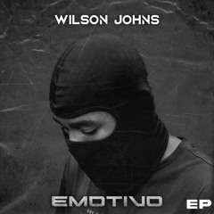

Motivos - EP por Wilson Johns
Descubra a nova EP "Motivos" com 6 faixas incríveis. Baixe e curta agora!

1. Wilson Johns - Intro
Baixar
2. Wilson Johns - Eu Sou Assim feat. Amaral P
Baixar
3. Wilson Johns - Impacto
Baixar
4. Wilson Johns - Zungo feat. Ralfh
Baixar
5. Wilson Johns - Sem Pressão feat. Dungas
Baixar
6. Wilson Johns - Tóxico
Baixar